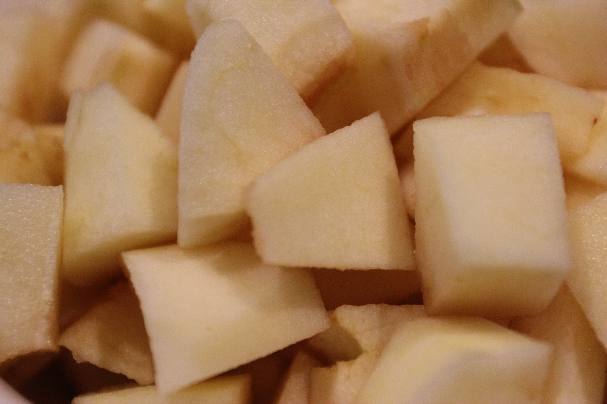
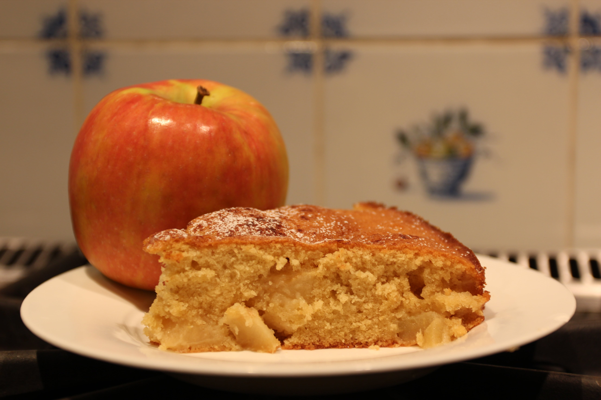
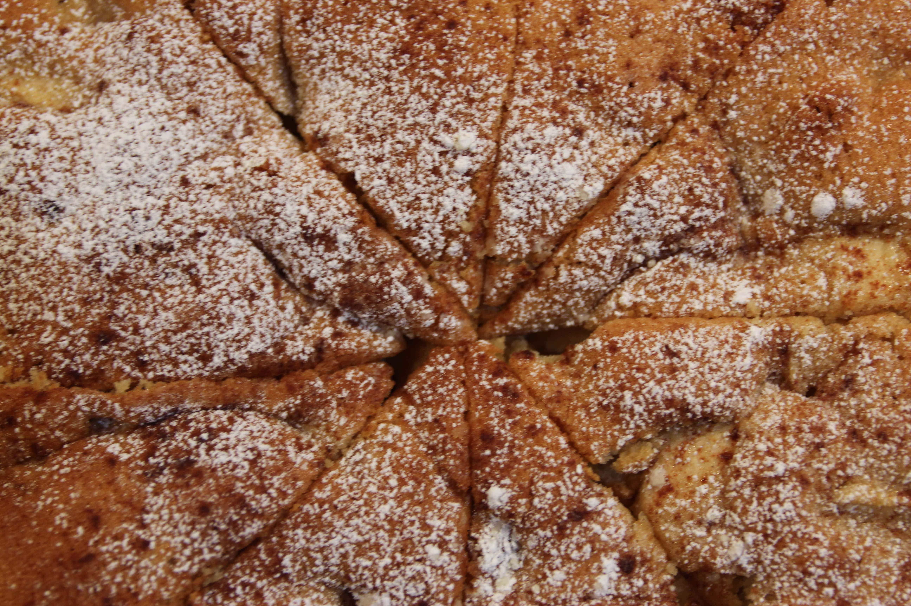

Apple Cake
Effort: Easy/Medium30 mins (Prep), 40 mins (Bake)
Ingredients
Dry Ingredients
- 1 stick (8 tablespoons) butter
- 4 small Pink Lady apples
- 1 cup all-purpose flour
- Pinch of salt
- 1 teaspoon baking powder
- ¾ cup packed light brown sugar
- Dash of powdered sugar
- Dash of cinammon
Wet Ingredients
- 2 eggs
- 1 teaspoon vanilla extract
- ¼ spiced rum (I used Captain Morgan)
Preparation
- Preheat oven to 350 degrees Farenheit.
- Grease 8 inch circular cake pan with cooking oil (I used avocado oil). Cut circular piece of parchment paper and coat the base.
- Dice and peel apples. I cut the apples into slices, peeled the skin with a knife, and diced from there.
- Whisk the two eggs with rum.
- Add remaining ingredients (other than apples) and mix well with stand mixer (I used the paddle attachment for the KitchenAid).
- Incorporate apples at low speed.
- Pour batter into cake pan. Dust with cinnamon.
- Bake for 40 minutes (until toothpick comes out clean).
- Bake for 40 minutes (until toothpick comes out clean).
- Dust with powdered sugar and serve.


